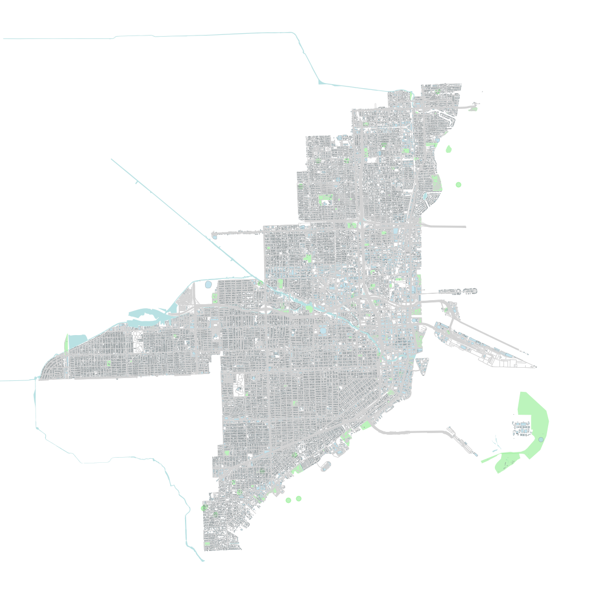
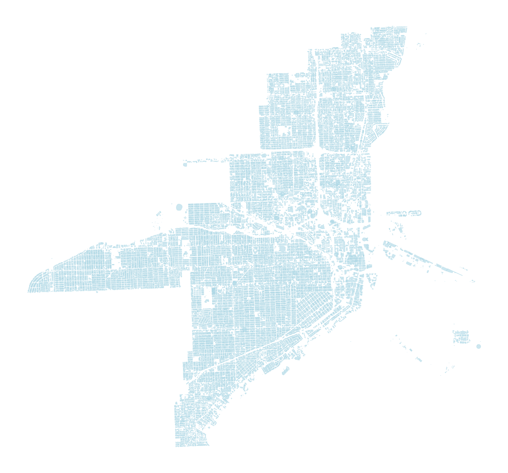
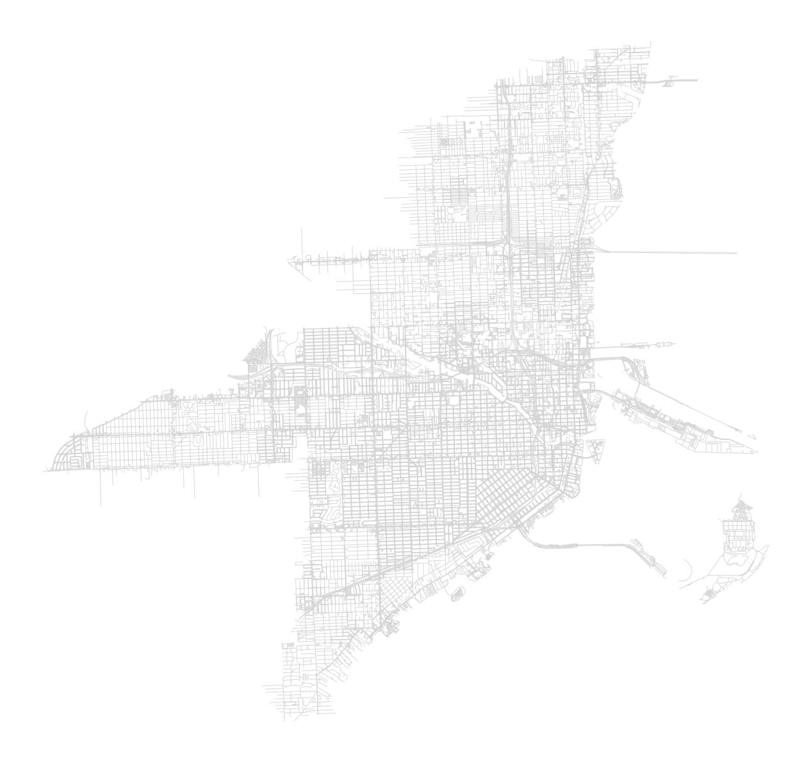
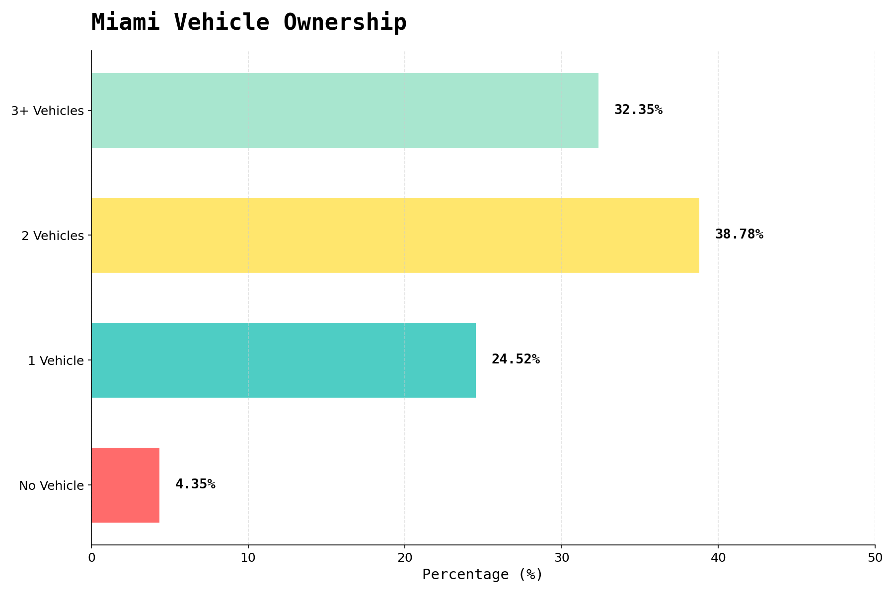

Miami's land use tells a story of urban priorities. As we scroll through this analysis, you'll see how the city allocates its finite space across parks, buildings, and transportation infrastructure. The patterns reveal a city shaped by automobile dependency, with significant implications for livability, environmental health, and social equity.
Parks and green spaces comprise only 2.62% of Miami's total land area. For a coastal city known for its tropical climate and outdoor lifestyle, this is remarkably low. Residents have limited access to public recreational areas, shade, and natural cooling—amenities that become increasingly critical as temperatures rise due to climate change. This scarcity disproportionately affects lower-income neighborhoods.
Buildings occupy 24.8% of Miami's land area, encompassing homes, apartments, offices, and retail spaces. While this represents substantial development, it's noteworthy that built structures take up less space than the infrastructure designed to move between them. The efficiency of urban density is undermined when roads consume more land than the destinations they connect.
Roads and highways consume 25.7% of Miami's land—more than buildings themselves. This is the footprint of car dependency: parking lots, multi-lane arterials, highway interchanges, and surface streets. Land that could support housing, parks, or commercial activity instead serves vehicles. This infrastructure prioritizes speed and throughput over pedestrian safety, neighborhood cohesion, and environmental sustainability.
In Miami, car-dependency is very common. To forego driving in the city is often not a choice. Households are now often holding as many cars as there are working-people living in them. With over 190,000 households and an average of 2.3 persons per household, that's a lot of cars on the road.
This interactive map shows commute patterns across Miami. The data reveals how residents travel to work—highlighting the dominance of driving alone versus public transit, walking, or cycling. Notice the geographic patterns: some neighborhoods have virtually no alternatives to car ownership, while others maintain slightly more diverse transportation options. Click and explore the map to see commute data for different census tracts.
Income inequality in Miami is stark and spatially concentrated. This map displays median household income across census tracts, revealing dramatic disparities between wealthy coastal areas and lower-income inland neighborhoods. Transportation costs burden lower-income households disproportionately—when car ownership is mandatory but expensive, families sacrifice other necessities. The lack of transit alternatives perpetuates economic inequality.